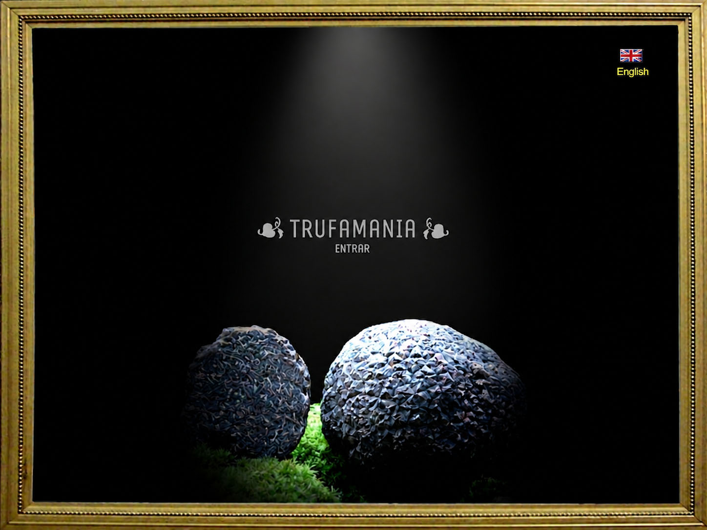

TRUFAMANIA
Pasión por la trufa

Una nueva etapa
Trufamania nació de la pasión por buscar y conocer las trufas. Durante años fue también una forma de acercar nuestras mejores trufas a quienes apreciaban su aroma y su gastronomía.
Aquí encontrarás información sobre las principales especies comestibles, consejos gastronómicos, fotografías, falsas trufas, trufas del desierto y relatos relacionados con la búsqueda y la cultura de la trufa.
Divulgación
Qué son las trufas, cómo viven, por qué son tan apreciadas y cuáles son las especies con mayor interés culinario.
Gastronomía
Conservación, limpieza, recetas y formas sencillas de aprovechar el aroma de la trufa en la cocina.
Archivo trufero
Fotografías, vídeos, falsas trufas, trufas del desierto y recuerdos de una larga etapa dedicada a este mundo.